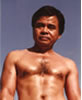

Sam Buot Metamorphosis through the Years
Click on Picture to Enlarge
Main Gallery - Sam Bout - History - Students - Family - Get Togethers Taboada's Birthday 2008 - Philippine Independence Day 2011
